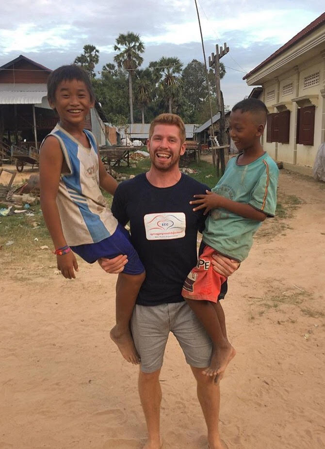

About Me

A bit about me...
From the time I was a small child there have been two things that
have defined me: curiosity and passion. I’ve always been very curious,
curious about people, other cultures, puzzles, how things work, you
name it, I’ve probably spent some time pondering or researching it.
This curiosity has led me to travel to many foreign lands, learn
other languages, try new things I thought I would never get to
try and of course led me to meet some amazing people along the way.
I’ve also also been very passionate. When I was a kid and even today
I had a very strong passion for sports, I lived for the weekend playing
games and competing against other kids. I have also found new passions,
a passion for language which has led me to become fluent in spanish;
a passion to help people, which has led me to volunteer in developing
countries; and a passion for life, no matter how hard the day is
just trying to stay positive and find the little moments of joy.